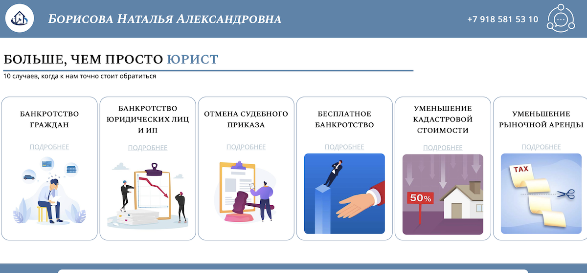
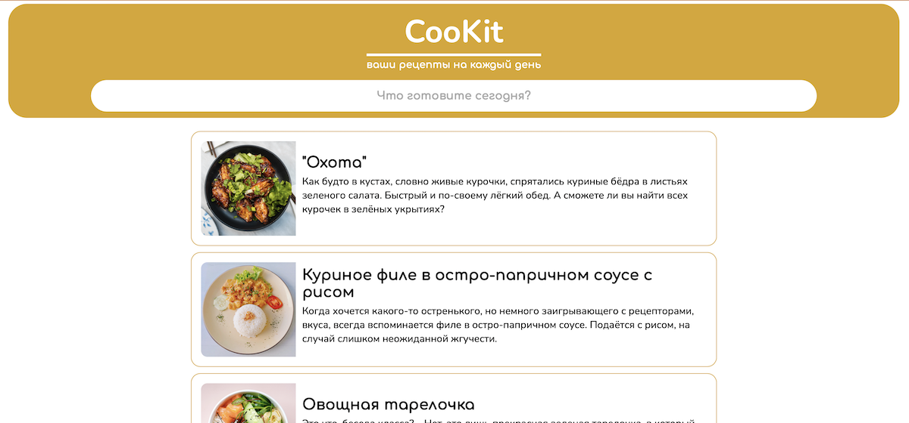
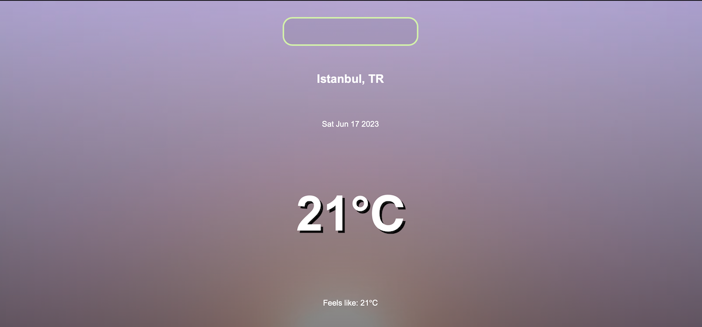
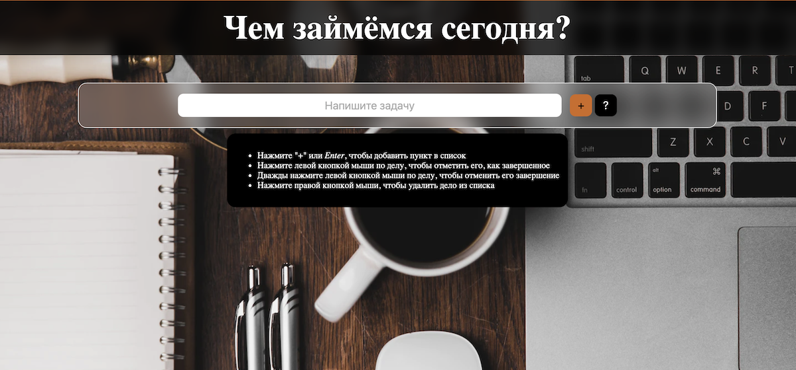

My sites
and functional demos (in Russian only)
İstanbul Experience
Site project for a guide in Istanbul. It shows helpful information about Istanbul, interesting places and services provided by this guide and their partners.
Used: HTML, CSS, JS
Natalia Borisova the lawyer
Site project for Natalia Borisova (@borisova_jurist). It shows the information about services to make and some other legal information.
Used: HTML, CSS
CooKit – site with a shopping list
Site's demo with the ability to search for dishes by their name or an ingredient. Click on ingredients' list, and everything will be added to your shopping list in the screen's corner.
Used: HTML, CSS, JS
Weather
Site's demo with searching for weather of world's any city.
Used: HTML, CSS, JS, OpenWeather API
Christmas
Site with a timer until December 25th of this year, with precious music by Mariah Carey in the background.
Used: HTML, CSS, JS

Todo list site
Site's demo of a todo list where you can mark todos as completed or delete them. When there are no todos you'll see a manual of the site.
Used: HTML, CSS, JS
Furniture gallery
Site's demo of the photos' gallery. Hover the cursor to see the full picture with additional info.
Used: HTML, CSS